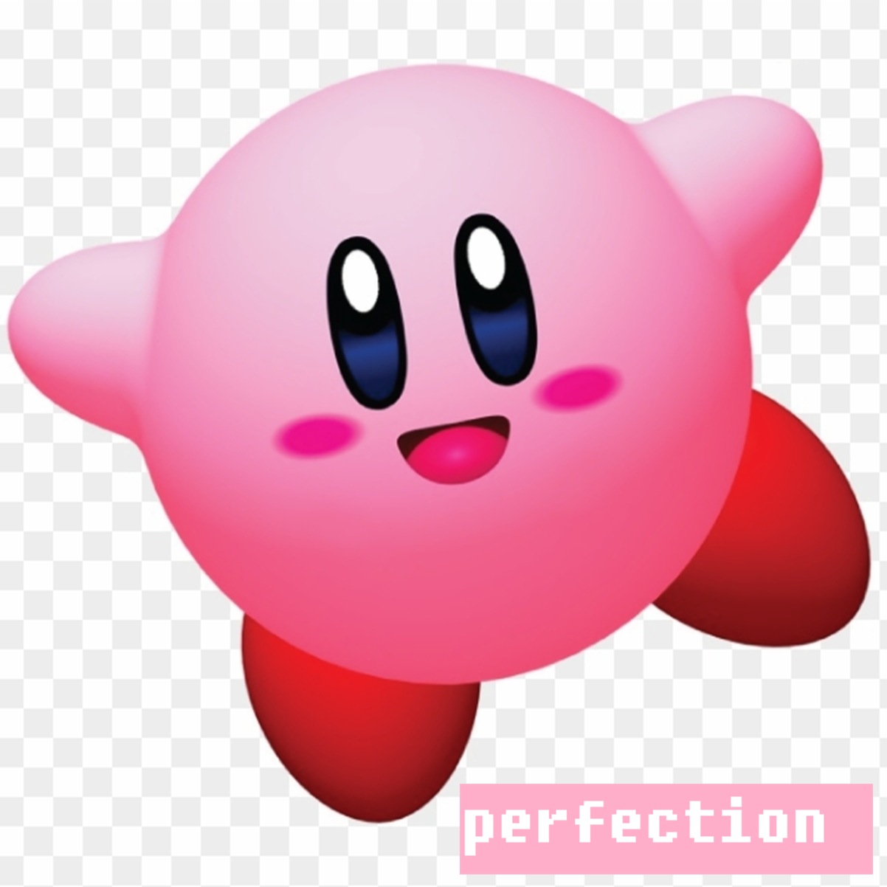

Kirby 64: The Crystal Shards
The first Kirby game to feature 3D graphics, viewed from a 2.5D perspective. Kirby must reassemble a sacred crystal shattered by Dark Matter across the colorful world of Ripple Star. The game's defining feature is the ability to combine two Copy Abilities to create unique Power Combos, adding strategic depth to the classic Kirby formula of inhaling enemies and gaining their powers.
.png)
| Platform | Nintendo 64 |
|---|---|
| Genre | Platformer (2.5D) |
| Released | |
| Developer | HAL Laboratory |
| Publisher | Nintendo |
| Available | N64, Wii, Wii U, NSO + Expansion |
Where to Play
About This Game
Kirby 64: The Crystal Shards was developed by HAL Laboratory and released for the Nintendo 64 in 2000—Kirby's only appearance on the console. Rather than going fully 3D like many N64 platformers, HAL chose a 2.5D approach: Kirby moves along a 2D plane while the world renders in full 3D, allowing for dynamic camera angles and depth. The game's standout feature is its power combination system, where players can mix any two of seven copy abilities to create 28 unique combo powers, some of which are wonderfully absurd—like a refrigerator that launches food or a lightbulb hat.
The game arrived at the tail end of the N64's life, sandwiched between Majora's Mask and the GameCube's launch. It was well-received for its charm and creativity but sometimes criticized for being too easy, a reputation that somewhat undersells the challenge of collecting all 100 Crystal Shards for the true ending. Director Shinichi Shimomura had previously worked on Kirby's Dream Land 2 and 3, bringing the same collectathon sensibility and hidden-depth philosophy to the series' first 3D outing.
Did You Know?
- There are 28 unique power combos — With seven copy abilities that can each be combined with themselves or any other, there are 28 total combos to discover. Combining Burn + Burn gives Kirby a fire sword, while Spark + Cutter turns Kirby into a lightbulb that illuminates dark areas — useful for finding hidden Crystal Shards.
- The true final boss was a shock for kids — Collect all 100 Crystal Shards and the game reveals that the Fairy Queen herself is possessed by Dark Matter. The resulting boss fight, 0² (Zero Two), features a bleeding eyeball in a surreal angelic form — jarring for an otherwise cheerful game.
- Kirby 64 was the last N64 game Shinichi Shimomura directed — He had previously led development on Kirby's Dream Land 2 and 3, establishing the Dark Matter trilogy. After Crystal Shards, he stepped away from the director role, making this the finale of his Kirby saga.
- Adeleine is the only human character in the Kirby series — The painter ally who joins Kirby's party is a human girl, something never repeated in the franchise. Her ability to paint enemies to life was so popular that fans campaigned for her return for nearly two decades until she appeared in Kirby Star Allies DLC.
Critical Reception
Accolades
- 77/100 Metacritic aggregate score — Metacritic, 2000
- #32 Best N64 Games of All Time — Nintendo Life, 2022
- Editor's Choice N64 Platformer of the Year runner-up — IGN, 2000
Club Achievements

100% Completion
Gold
Beat the Game
SilverOther Participants


Speedrun Records
Kirby 64 speedruns are all about optimizing ability combos and minimizing transitions. The short length makes it a great entry-level speedgame, but the 100% category with all Crystal Shards demands precise routing.
Soundtrack
Composed by Jun Ishikawa & Hirokazu Ando
The soundtrack carries the series' signature cheerful energy into full CD-quality audio for the first time. Jun Ishikawa and Hirokazu Ando blend bouncy melodies with atmospheric pieces that shift dynamically as Kirby traverses different planets. The factory and desert stages are particular standouts, and the final boss theme takes an unexpectedly dark, operatic turn.
Notable Tracks
- Pop Star (World 1)
- Rock Star (World 2)
- Aqua Star (World 3)
- Factory Inspection (Neo Star)
- Miracle Matter
- 02 Battle (Final Boss)
Sources & Attribution
- Game description and historical background adapted from Wikipedia
- Trivia sourced from Giant Bomb and WiKirby
- Review scores from IGN, GameSpot, and Nintendo Power
- Accolades from Metacritic, Nintendo Life, and IGN
- Speedrun data from Speedrun.com
- Playtime estimates from HowLongToBeat
- Screenshots and box art via LaunchBox Games Database
- Soundtrack information from KHInsider
- Pricing data from PriceCharting